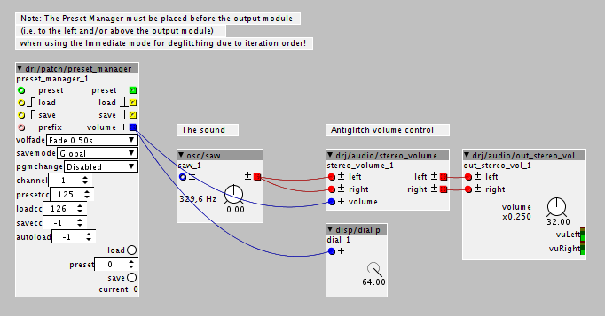

The glitch workaround is of course to make sure there is no sound at the moment of saving or loading presets. Not satisfactory, but you do get the luxury of totall recall without glitches if you do. The built in preset system (which I never could get to work - it needs some concise docs) can't replace the Preset Manager - I still consider the latter an essential part of any synthesizer.
I've toyed with the idea of preloading all saved presets into RAM, so that the loading of a saved preset will be near instantaneous, just like the built in presets. However, that starts to feel like doing too much of a fudge code wise and resource wise...
I don't know how far the refactoring of parameters will go, that is, whether it'll introduce a total recall, or "conventional", preset system.
Edit: the info below is updated to reflect the latest version of the PM.
Right, let's try to make things better then. I've synced up a new version of the Preset Manager. It introduces a new attribute called "volfade" with four values:
"Immediate" - switches patches immediately, may cause a click, but noise/tone burst
"Fade 0.02s" - generates a fade out and fade in lasting 0.5, 0.1 or 0.02 seconds each.
"Fade 0.10s"
"Fade 0.50s"
Note that when using the Immediate mode for deglitching, the Preset Manager must be place before the output module, as in to the left and/or above it, due to the iteration order.
Below is a test patch (picture and axo file). Please test it and let me know how it goes.

test_preset_manager_antiglitch.axp (2.9 KB)


 )
)